local-first · claude code · source-available
Run your Claude Code agents like a fleet.
A local-first control plane for Claude Code sessions: see every session, approve permission prompts from one queue, delegate tasks to headless agents in git worktrees. One Go binary, no cloud, no account — plus a versioned plugin marketplace so your agents live in one place.
quick start
Three commands to a running swarm.
Nothing to sign up for and nothing to host. The marketplace installs into Claude Code, the bootstrap script writes a project overlay, and the control plane runs on your own machine.
/plugin marketplace add atretyak1985/swarmery
/plugin install core@swarmeryInstall the marketplace in Claude Code, then the vendor-neutral core. Domain packs are opt-in on top.
bash scripts/init.shBootstrap a consumer project: settings.json, a project.json skeleton and its private workspace namespace.
curl -fsSL https://raw.githubusercontent.com/atretyak1985/swarmery/main/scripts/install.sh | bash
swarmery serveInstall and run the control plane: the script fetches the release binary for your platform, verifies it against SHA256SUMS, and the daemon listens on :7777. Sessions you already ran show up at once.
why swarmery
Six decisions that hold the whole thing together.
Every one of them is enforced by something you can run: a scan, a gate, a worktree, a verdict. None of them is a convention you have to remember.
neutrality
A core that names no one
Brand tokens are forbidden anywhere under plugins/, and a CI ratchet keeps the count at zero. Each project's flavor — its repos, stacks and naming — arrives at runtime from its own project.json.
graduation
Flow goes up only
A component is born project-local, is promoted to a domain pack when a second project needs it, and reaches the core only when every project does. Framework files are never copied downward into a project.
isolation
One worktree per run
Every phase run and every dispatched task gets its own branch inside an isolated git worktree, cut from the tip of whatever your checkout is on. Your working tree is never the agent's workspace, and a janitor prunes what finished runs leave behind.
verification
Verdicts that can say no
A read-only verifier diffs the work against the persisted start_point — not the branch against itself — and returns PASS, FAIL or INCONCLUSIVE. A phase counts as done when its acceptance criteria are ticked and its completion report is written, never because a process exited 0.
plans
A phase DAG, not a wish list
An idea becomes a phased plan in which every phase carries measurable acceptance criteria, a forecast of its size, duration and outcome, and a completion report. Runs execute that graph in dependency order, and the markdown on disk stays the source of truth.
observability
Everything on the record
The control plane indexes every session transcript into local SQLite: tokens, cost, approvals, forecasts against actuals, and the lessons drawn from the gap. Nothing has to leave the machine for any of it to work.
planning · episode 1
From an idea to a plan your agents can run.
Describe what you want in prose. A planner interviews you, writes a phased plan with acceptance criteria and forecasts, and the same page runs it — one phase at a time or the whole graph — in isolated worktrees.
- idea
- interview
- phase DAG
- run
- forecast vs actual
- lesson
new plan
An interview, not a form
A planner session asks one question at a time on the left while the plan as it stands sits on the right, where you refine it or tell the planner to proceed. A reply the wizard cannot parse degrades into a conversation instead of a dead end.
plans
Markdown stays the truth
A plan is a folder of phase documents with depends-on edges. Progress is the acceptance-criteria checkboxes inside them: ticking one in the dashboard rewrites that exact line. Revisions are staged proposals until you apply them; a phase opens in the centre of the page with its Story, Criteria, Runs and Report.
runs
Forecast first, then measure
Before anything runs, the planner forecasts each phase's size, duration, outcome and the areas it will touch. A phase runs headlessly from its own document in a fresh worktree; afterwards the actuals are scored against the forecast, and a run that lands far from the plan becomes a lesson candidate.
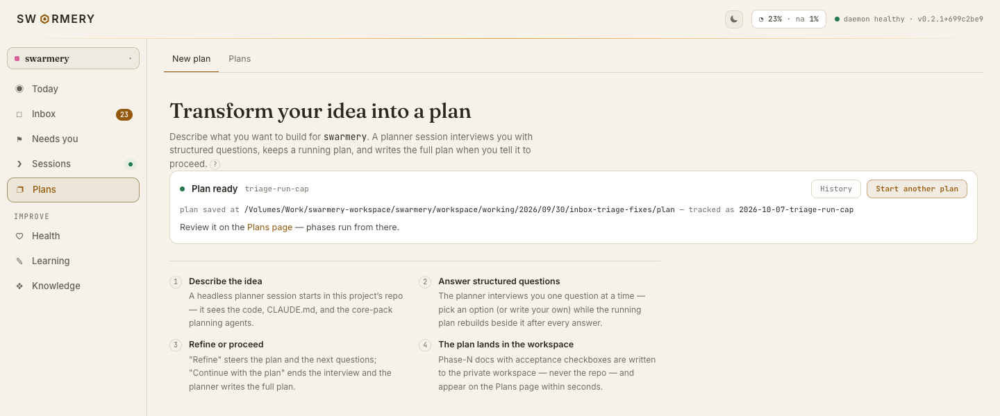
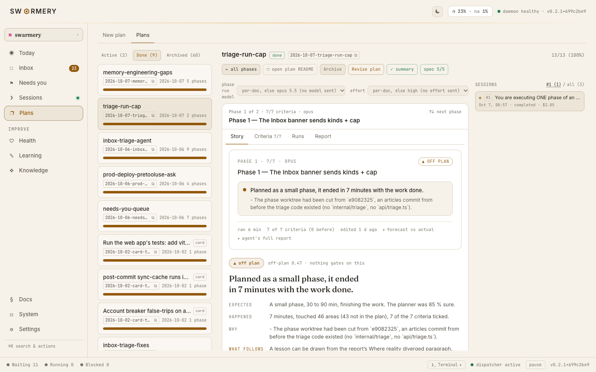
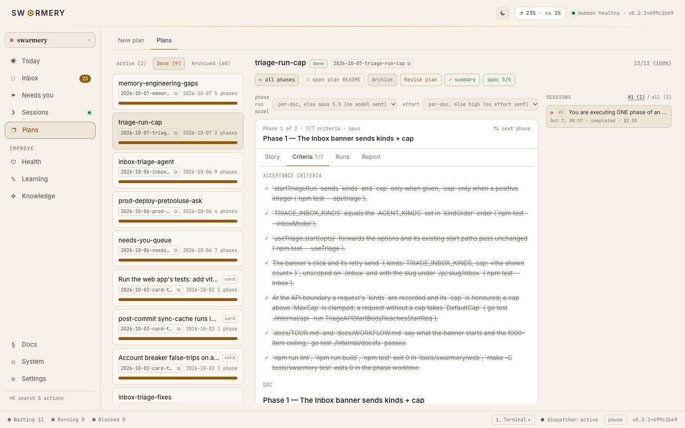
inbox · episode 2
Every decision your agents wait on, in one place.
Permission prompts, lesson candidates, advisor findings, agent-change proposals, classifier answers to check — one queue, worked from the keyboard, with an agent to clear the part that never needed you.
one queue
Six kinds, one list
Approvals, lessons, advisor recommendations, agent-change proposals, classifier checks and lesson retirements, split by tab or shown together. j/k move, e takes the primary action, x denies or dismisses, s skips. An approval shows the tool, its input, the owning session and an expiry countdown.
run triage
An agent clears the backlog
When something it could handle has waited a day, the Inbox offers a triage run. The agent labels the classifier's guesses, closes what is only informational and leaves a suggestion with its reasoning on the rest; you accept them in one click, and everything it closed stays undoable for seven days. Approvals, agent changes and alerts always wait for you.
needs you
Sessions blocked on a human
A second list, oldest blocker first: a permission prompt, a question, a session waiting on a plain-text reply, a production deploy that may only be confirmed from the terminal, a failed run. Nothing here answers for you — it puts the reply on your clipboard and names the session.
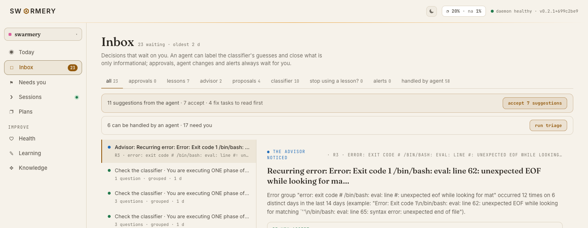
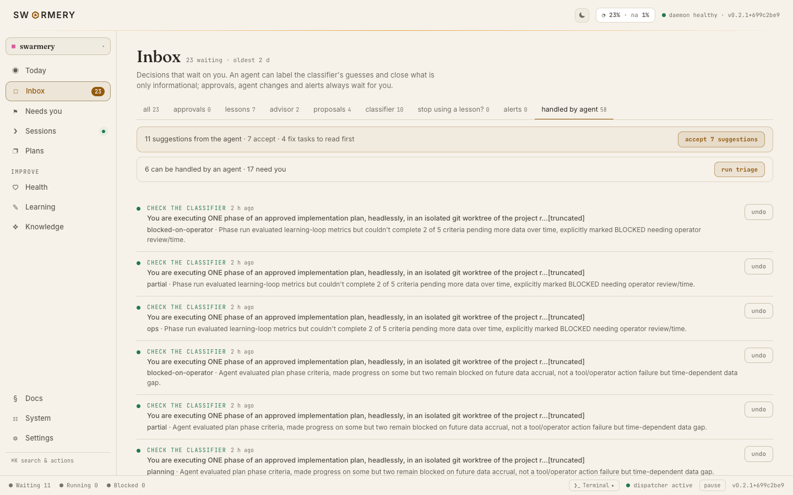
health · episode 3
How your agents are doing, and what to change.
One date range, one sentence about the fleet, and the agents that moved it. Scorecards compare every agent against the previous window, friction names the tools and errors that cost you time, and an evidenced advisor turns the pattern into a change you review as a diff.
scorecards
Direction, not just a level
Every agent gets runs, error rate, cost, p95 and re-dispatch rate, each against the previous window, and its errors split into behaviour, harness and infra. The overview reduces the window to one sentence and the three agents behind it.
friction
What cost you time
Which tools got denied, the top recurring error groups, and how long approvals kept agents waiting. A triage run over the error groups mutes the noise for 30 days and files a fix task for what is fixable; a denied tool is one click from an auto-approve rule.
advisor · cost
Evidence, then a diff
A deterministic rule engine raises recommendations that carry the data that triggered them; accept one and it moves through proposed, adopted and verified, and a rewrite of an agent arrives as a diff to review. Cost and tokens pivot by project, model or agent, with a projected monthly figure and CSV export.
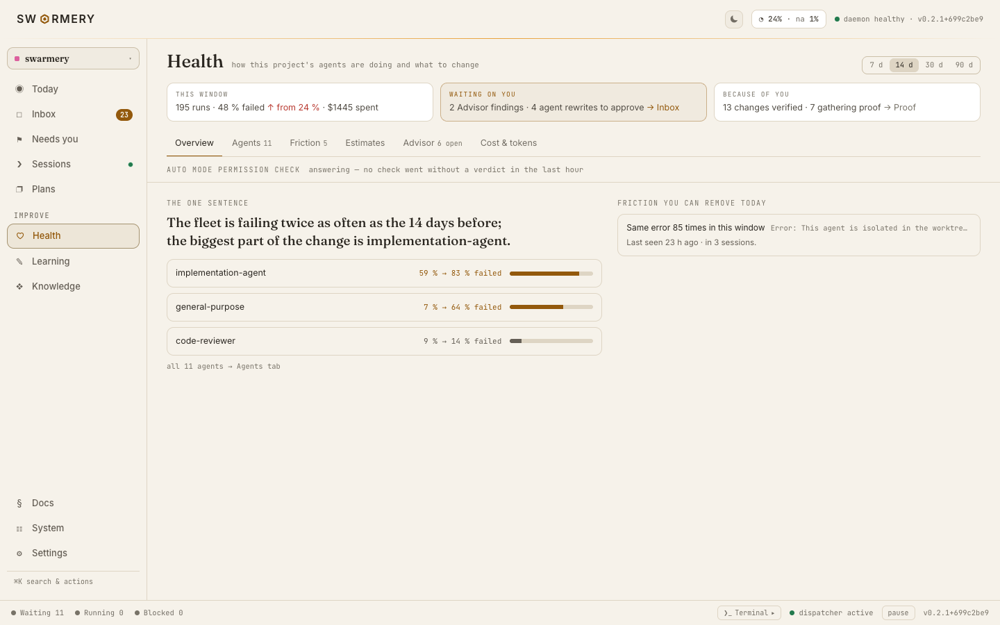
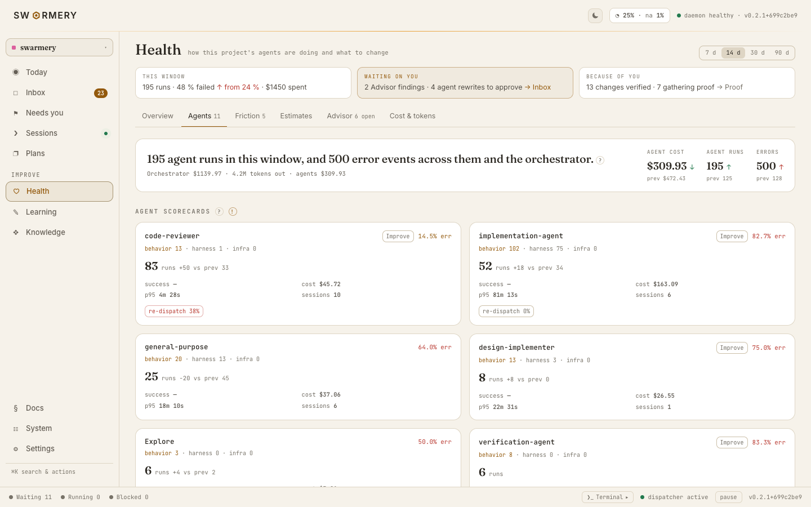
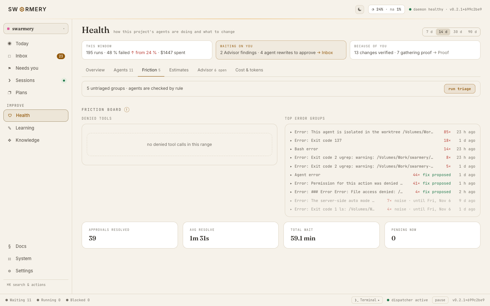
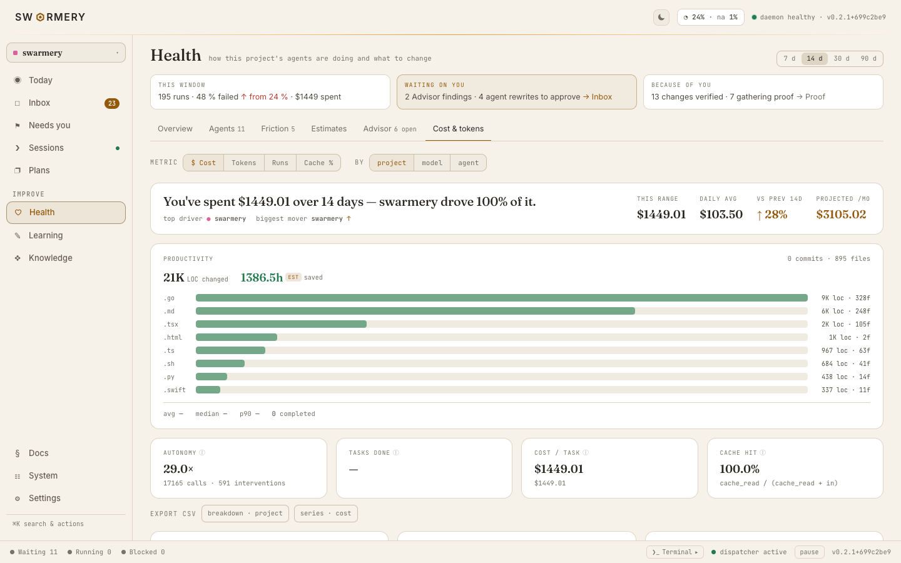
control plane
One binary that watches the whole swarm.
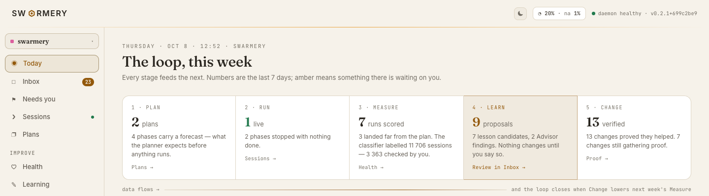
A single Go daemon with an embedded React dashboard. It reads the session transcripts Claude Code already writes, indexes them into local SQLite, and serves everything on one port that never leaves the loopback interface.
- TodayWhat waits on you, what runs now, and this week's loop — plan, run, measure, learn, change.
- InboxEvery decision in one queue — permission prompts, lessons, advisor findings, agent-change proposals — and it reaches your phone, so a waiting run is unblocked without going back to the desk.
- SessionsEvery transcript indexed as it is written, with the tool calls, files and errors of each run.
- Needs youEvery session blocked on a human, oldest first — a prompt, a question, a plain-text reply, a production deploy to confirm locally — with the reply ready for your clipboard.
- PlansNew plan and plans: the planner interview, the phase timeline with its dependencies, forecasts, runs and completion reports — the markdown on disk stays the source of truth.
- HealthAgent scorecards, friction, estimates, an evidenced advisor, and cost and tokens per session, project and account against the live quota window. Friction gets its own triage run over recurring errors.
- LearningLessons from runs that missed their forecast, an optional local classifier, how honest the forecasts are, and the proof of what your decisions changed.
- KnowledgeWhat one project knows about itself: its memory files in one editor with a conflict guard, a stale-fact lint, and its architecture map with a staleness badge.
- SystemEvery agent, skill, hook and command on the machine with scope, origin and a content-addressed version history, plus routines and pack toggles.
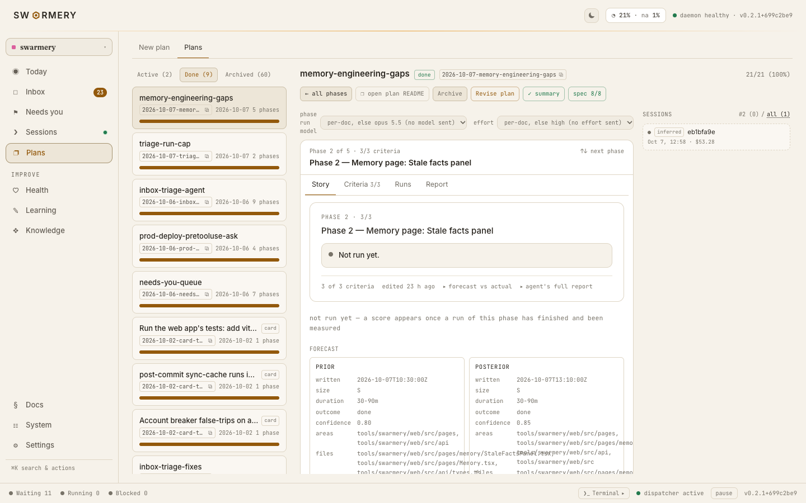
plugins
One core, thirteen opt-in packs.
The core carries everything that is true for every project. Domain packs add the vocabulary and tooling of one kind of work, and a project enables only the ones it actually uses.
Vendor-neutral agent-development core: a judgment-style agent fleet (orchestration, planning, design, execution, review) plus progressively-disclosed skills, commands, hooks, and the project-aware agent-work CLI.
UAV/drone domain pack: MAVLink-style telemetry, mission planning, embedded/edge runtime.
IoT domain pack: BLE communication, device telemetry, health-metrics processing.
Web/marketing domain pack: SEO, i18n, landing-page CRO, Figma-to-code styling.
Infrastructure & delivery domain pack: Kubernetes/Helm, GitOps promotion, IaC, GitLab CI, GitHub Actions, GCP & AWS CI auth, Keycloak.
Semantic code-navigation pack: Serena LSP MCP server — symbol-level search, references and refactoring context.
Claude-engineering pack: skills for building and auditing Claude agent systems — agent architecture, tool and MCP design, prompt engineering, Claude Code config, context reliability.
Context-graph pack: file:line locators injected into a prompt before the first grep, and a blast-radius note after every edit naming what depends on the file just changed.
Knowledge-graph pack: the graphify skill turns a repo or folder into a persistent knowledge graph with query, path and affected tools plus HTML, JSON and Neo4j exports.
Repo-wide architecture map: a machine-readable JSON contract of layers, modules and file-anchored flows plus a self-contained HTML viewer, freshness-stamped per commit.
Issue-tracker pack: drives any Jira ticket end-to-end — access preflight, defect-or-change triage, reproduction or test-first evidence, delegated fix, evidence comment, QA transition.
Multi-account pack: bind a project to one of several Claude Code accounts and run every session under it, with a shell wrapper and a wrong-account warning.
Pull-request review pack: /pr-review reviews a GitHub PR and posts verified inline findings, or triages the reviewer comments already on it — fixing the valid ones behind the repo's gates and rebutting the rest with file:line evidence.
Design-handoff pack: takes an exported design and re-expresses it in the project's stack pixel-accurately — token inventory, reuse-versus-create recon, an approval gate, and a measured pixel diff as the completion criterion.
license
Two licenses, and honest about both.
The plugin framework — every agent pack, skill, script and overlay — is Apache-2.0. Readable, forkable and yours to build on anywhere, including inside a company's paid workflow, at no cost.
The control plane, the Go binary under tools/swarmery/, stays PolyForm Noncommercial 1.0.0: free for personal projects, learning, research and other open-source work. Commercial use is the one thing that half does not grant — read the terms and get in touch.